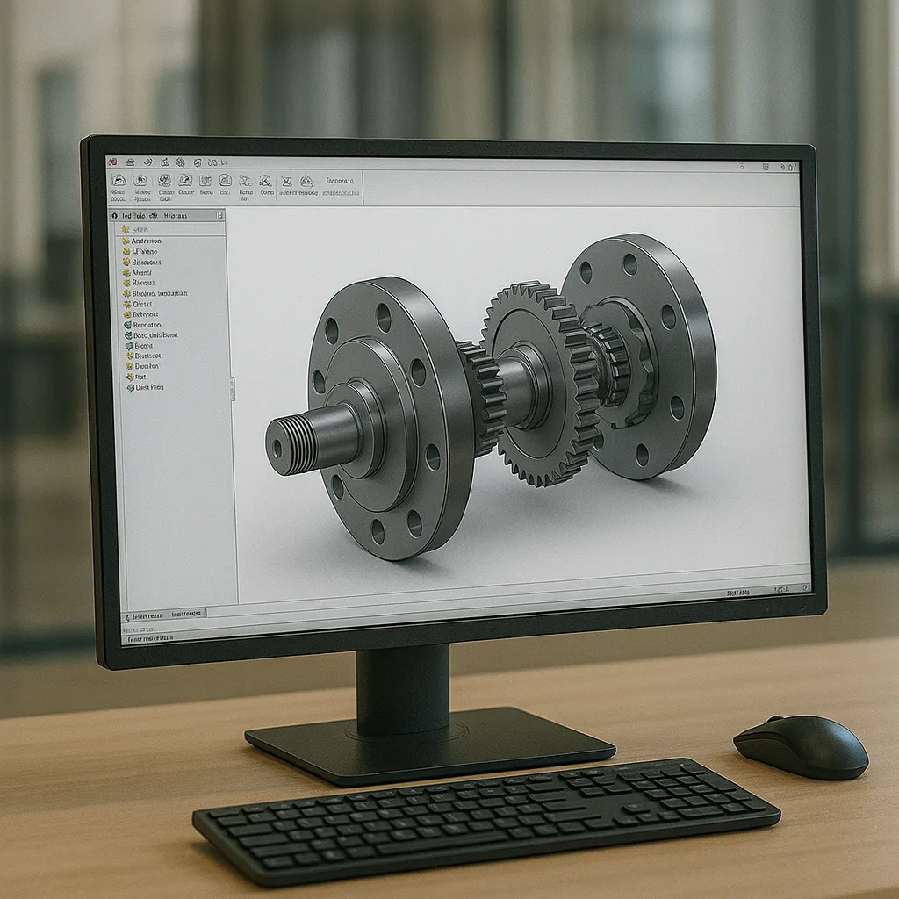

Diseño 3D de Prototipos y Piezas CAD
Convertimos conceptos técnicos en modelos digitales precisos. Especialistas en ingeniería de producto y validación mecánica para entornos industriales.

Servicios de Oficina Técnica y Modelado CAD
En EST Ingenieros actuamos como tu oficina técnica externa. Diseñamos en CAD paramétrico piezas, mecanismos y prototipos funcionales, asegurando una transición fluida entre la idea y la planta de producción.
Aplicamos criterios avanzados de DFM (Design for Manufacturing). Optimizamos cada geometría según el proceso de fabricación final:
- Desarrollo de prototipos industriales rápidos y funcionales.
- Diseño de carcasas a medida para integración de electrónica.
- Utillajes, posicionadores y herramental para líneas de montaje.
- Rediseño de componentes para reducción de costes y mejora de rendimiento.
Nuestro Proceso de Ingeniería
Briefing
Definición de requisitos técnicos y materiales.
Concepto
Esquemas preliminares y arquitectura mecánica.
Modelado 3D
CAD paramétrico de alta fidelidad y precisión.
Validación
Análisis de ensamblajes, ajustes y cinemática.
Optimización
Chequeo final de fabricabilidad industrial.
Entrega
Documentación técnica y archivos nativos.
Documentación y Formatos Profesionales
Modelos STEP / IGES
Archivos sólidos universales para mecanizado CNC y moldes.
Planos Técnicos PDF
Planos de fabricación con tolerancias, acabados y materiales.
Mallas para Impresión 3D
Formatos STL y 3MF optimizados para fabricación aditiva industrial.
¿Necesitas externalizar tu Diseño Industrial?
Aportamos la experiencia técnica necesaria para que tu proyecto sea fabricable, funcional y rentable.
Solicitar propuesta técnica